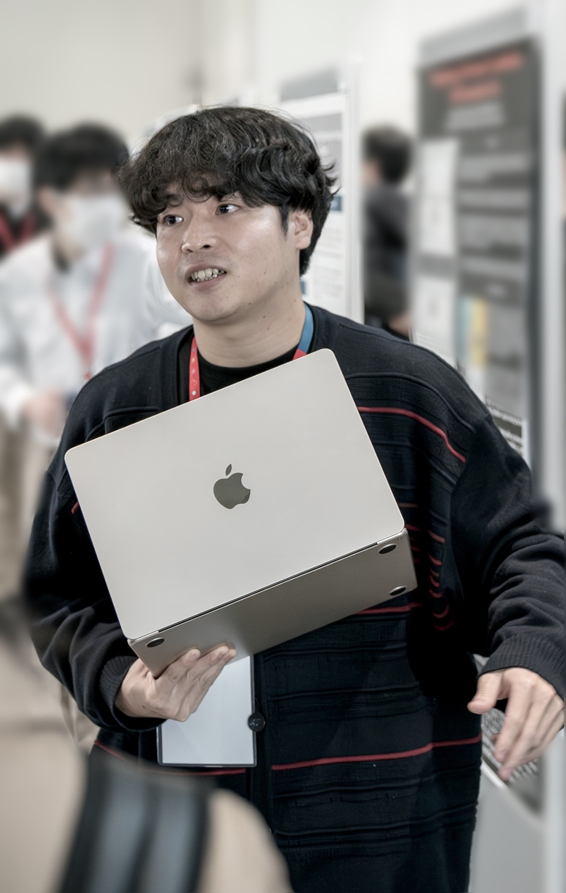

Sound Designer

藤村 勇里
Yuri FUJIMURA
2002年 神奈川県生まれ。
東京工科大学メディア学部メディア学科4年。
オーディオエンジニアリング、サウンドデザインを専攻。
ゲームサウンドの作曲・効果音制作から、サウンドプログラミングとマルチチャンネルスピーカーを用いた立体音響作品まで幅広く手掛ける。
卒業研究ではPureData/Reaper/TouchDesignerを用いた映像と音響を同期させるインタラクティブシステムを開発。学会での発表も積極的に行なっている